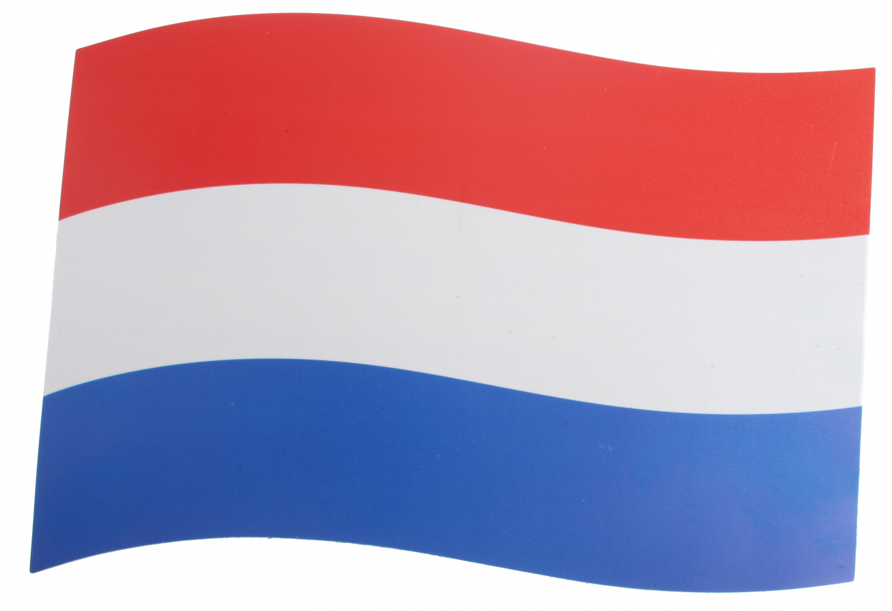

Amsterdam

Amsterdam is de grootste stad en hoofdstad van Nederland. Er wonen ongeveer 750.000 mensen en de stad heeft een oppervlakte van circa 219 km².
Amsterdam geniet internationale bekendheid en past in het rijtje van wereldsteden als Parijs, Barcelona en Milaan.
Op 1 augustus 2010 werd de grachtengordel op de Werelderfgoedlijst van UNESCO geplaatst
Amsterdam heeft één van de grootste historische centra van Europa en nog veel meer interessante kenmerken.
Bij buitenlanders staat de stad vooral bekend als de stad waar drugs en prostitutie gedoogd wordt, maar Amsterdam is veel meer dan dat.
In de stad kun je uren langs de grachten slenteren en genieten van de mooie gebouwen, interessante musea bezoeken, heerlijk winkelen en andere leuke en wereldberoemde bezienswaardigheden bezoeken.
Bezienswaardigheden
Grachtengordel
De grachtengordel van Amsterdam is een van de grootste attracties. Amsterdam heeft ook wel als bijnaam “het Venetië van het noorden”.
De unieke grachten zie je het beste vanaf een rondvaartboot.
De mooiste historische panden uit de Gouden Eeuw komen voorbij en ook een aantal fraaie bruggen.
De vier Amsterdamse hoofdgrachten zijn de Brouwersgracht, Herengracht, Keizersgracht en Prinsengracht.
Anne Frankhuis
Tijdens een bezoek aan Amsterdam kan het Anne Frankhuis niet overgeslagen worden.
Aan de Prinsengracht ligt het huis waar Anne Frank tijdens de Tweede Wereldoorlog bijna 2 jaar ondergedoken zat.
In dit huis schreef Anne haar wereldberoemde dagboek.
Het achterhuis is omgebouwd tot een museum waar nog precies te zien is hoe de familie Frank samen met vier andere onderduikers leefde tijdens de oorlog.
Koninklijk paleis
Het Koninklijk paleis op de Dam in Amsterdam is open voor publiek, als het niet gebruikt wordt door de Koninklijke familie (gebeurt ongeveer 2 keer per jaar, bij ceremoniële familie- en staatsaangelegenheden).
De bouw van dit indrukwekkende gebouw werd gestart in 1648 en pas in 1665 was het paleis af.
Jacob van Campen ontwierp het paleis in de Hollands Classicistische stijl.
Officieel diende het gebouw als stadhuis van Amsterdam, maar na 1808 werd het in gebruik genomen als Koninklijk paleis
Vandaag de dag worden er rondleidingen gegeven door het paleis en zijn er regelmatig tentoonstellingen.